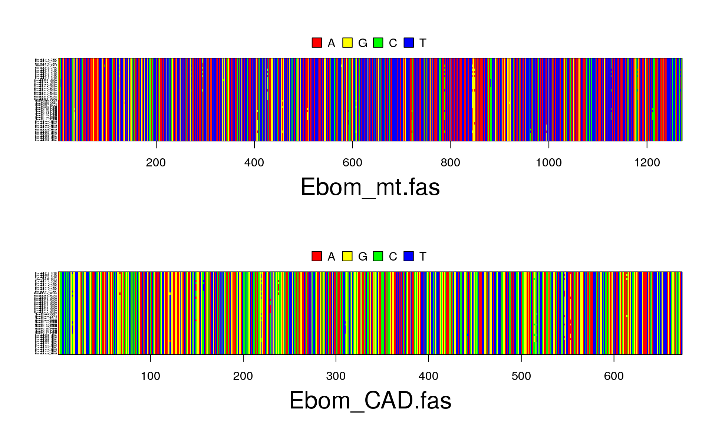

Now, we will discuss in more detail how to assess population genetic structure from sequence data. Assuming that you have a priori information about how the individuals are grouped in subpopulations, one can do the following analyses: 1) quantify pairwise subpopulation structure and their significance, 2) test for hierarchical structure among groups of subpopulations, and 3) use population clustering algorithms to corroborate the a priori grouping hypothesis. We will go into each of these analyses in this vignette.
library(apex)
library(adegenet)
library(ape)
library(pegas)
library(hierfstat)
library(mmod)
library(genetics)
library(poppr)We will first upload FASTA files for each gene independently, and then we will create a multidna object that concatenates both genes (allData1). Finally, this multidna object (allData2) will be converted into a genind object (allData3), which will be used for downstream analyses.
myData1<- read.FASTA("Ebom_mt.fas")
tmp1<-as.matrix(myData1)
tmp1
myData2<- read.FASTA("Ebom_CAD.fas")
tmp2<-as.matrix(myData2)
tmp2
allData1<-list(mt=tmp1[,1:1271], CAD=tmp2[,1:673])
tmp3<-as.matrix(allData1)
allData2<-new("multidna",allData1)
plot(allData2, cex=0.2)
allData3<-multidna2genind(allData2,mlst=TRUE)
pop(allData3)<-(rep(c("CA","Ch","Am","AF"), each=10))
allData3myData1<- read.FASTA("../data/Ebom_mt.fas") # this creates a DNAbin object
tmp1<-as.matrix(myData1) # converts the list of sequences into a matrix
tmp1## 40 DNA sequences in binary format stored in a matrix.
##
## All sequences of same length: 1271
##
## Labels: EbomML016_CRIC EbomML088_CRIC EbomML178_CRIC EbomML202_CRIS EbomML312_CRIC EbomML313_CRIC ...
##
## Base composition:
## a c g t
## 0.342 0.097 0.105 0.456myData2<- read.FASTA("../data/Ebom_CAD.fas") # this creates a DNAbin object
tmp2<-as.matrix(myData2) # converts the list of sequences into a matrix
tmp2## 40 DNA sequences in binary format stored in a matrix.
##
## All sequences of same length: 673
##
## Labels: EbomML016_CRIC EbomML088_CRIC EbomML178_CRIC EbomML202_CRIS EbomML312_CRIC EbomML313_CRIC ...
##
## Base composition:
## a c g t
## 0.272 0.226 0.241 0.262allData1<-list(mt=tmp1[,1:1271], CAD=tmp2[,1:673])
tmp3<-as.matrix(allData1)
allData2<-new("multidna",allData1)
plot(allData2, cex=0.2)
allData3<-multidna2genind(allData2,mlst=TRUE)
pop(allData3)<-(rep(c("CA","Ch","Am","AF"), each=10))
allData3## /// GENIND OBJECT /////////
##
## // 40 individuals; 2 loci; 36 alleles; size: 51 Kb
##
## // Basic content
## @tab: 40 x 36 matrix of allele counts
## @loc.n.all: number of alleles per locus (range: 17-19)
## @loc.fac: locus factor for the 36 columns of @tab
## @all.names: list of allele names for each locus
## @ploidy: ploidy of each individual (range: 1-1)
## @type: codom
## @call: df2genind(X = xdfnum, ind.names = x@labels, ploidy = 1)
##
## // Optional content
## @pop: population of each individual (group size range: 10-10)diff_stats(allData3) # this function calculates overall Nei's Gst, Hedrick's Gst and of the dataset## $per.locus
## Hs Ht Gst Gprime_st D
## mt 0.7421053 0.9117763 0.1860885 0.9058976 0.8772109
## CAD 0.7263158 0.9190789 0.2097351 0.9550196 0.9391026
##
## $global
## Hs Ht Gst_est Gprime_st D_het D_mean
## 0.7342105 0.9154276 0.1979590 0.9315893 0.9090759 0.9071022Phi_st_Meirmans(allData3) # this function calculates overall PhiST, the Fst analog for DNA sequence data## $per.locus
## mt CAD
## 0.8817688 0.9443099
##
## $global
## [1] 0.8938182pairwise_Gst_Nei(allData3, linearized=FALSE) #Calculates pairwise Gst. If linearized =TRUE, it calculates 1/(1-Gst) ## CA Ch Am
## Ch 0.08227848
## Am 0.12513019 0.15853659
## AF 0.14803625 0.18012422 0.15297092pairwise_Gst_Hedrick(allData3, linearized=FALSE)#Calculates pairwise Gst. If linearized =TRUE, it calculates 1/(1-Gst') ## CA Ch Am
## Ch 0.6419753
## Am 0.9828211 1.0000000
## AF 1.0000000 1.0000000 0.9002976pairwise_D(allData3, linearized=FALSE, hsht_mean="harmonic") #Calculates pairwise Gst. If linearized =TRUE, it calculates 1/(1-D) ## CA Ch Am
## Ch 0.5636175
## Am 0.9780685 1.0000000
## AF 1.0007468 1.0012306 0.8632757To estimate if populations are significantly different, we will generate 100 replicates of the dataset using the function chao_bootstrap(). Then, summary statistics (meand and 95% CI) will be calculated for each of the different parameters of population differentiation.
bs<-chao_bootstrap(allData3, nreps=100)
summarise_bootstrap(bs, Gst_Nei) #for Nei's Gst##
## Estimates for each locus
## Locus Mean 95% CI
## mt 1.6594 (1.146-2.5155)
## CAD 1.6862 (1.1299-2.496)
##
## Global Estimate based on average heterozygosity
## 1.66 (1.2326-2.1705)summarise_bootstrap(bs, Gst_Hedrick) #for Hedrick's Gst##
## Estimates for each locus
## Locus Mean 95% CI
## mt 1.035 (1.0091-1.0886)
## CAD 1.0205 (1.0029-1.0604)
##
## Global Estimate based on average heterozygosity
## 1.0279 (1.013-1.0709)summarise_bootstrap(bs, D_Jost) #for Jost's D##
## Estimates for each locus
## Locus Mean 95% CI
## mt 0.9137 (0.8535-0.9577)
## CAD 0.9496 (0.887-0.9898)
##
## Global Estimate based on average heterozygosity
## 0.9322 (0.89-0.9657)
##
## Global Estimate based on harmonic mean of statistic
## 0.9309 (0.8887-0.9655)Analysis of Molecular Variance (AMOVA) is a method for estimating population differentiation from molecular data taking into account the mutational distance between alleles. Unlike Fst, which quantifies genetic differentiation based on allele frequencies, AMOVA treats molecular data as vectors and estimates Euclidean distances between alleles. Furthermore, it is possible to test hypotheses about differentiation by grouping subpopulations in a hierarchical structure (Ref).
allData_dist<-dist.multidna(allData2,pool=TRUE)
strata(allData3)<-data.frame(regions=c(rep("West", 20), rep("East", 20)), populations=c(rep("CA", 10), rep("Ch", 10),rep("Am", 10), rep("AF", 10)))
amova(allData_dist ~ populations, data=strata(allData3), nperm = 100)##
## Analysis of Molecular Variance
##
## Call: amova(formula = allData_dist ~ populations, data = strata(allData3),
## nperm = 100)
##
## SSD MSD df
## populations 0.0009468508 3.156169e-04 3
## Error 0.0005930812 1.647448e-05 36
## Total 0.0015399320 3.948544e-05 39
##
## Variance components:
## sigma2 P.value
## populations 2.9914e-05 0
## Error 1.6474e-05
##
## Variance coefficients:
## a
## 10Information on further analysis that could be done, other workflows can be linked as well (note the HTML as opposed to Rmd link).
This shows us useful information for reproducibility. Of particular importance are the versions of R and the packages used to create this workflow. It is considered good practice to record this information with every analysis.
options(width = 100)
devtools::session_info()## Session info ---------------------------------------------------------------------------------------## setting value
## version R version 3.2.3 RC (2015-12-03 r69731)
## system x86_64, linux-gnu
## ui X11
## language (EN)
## collate en_US.UTF-8
## tz <NA>
## date 2015-12-24## Packages -------------------------------------------------------------------------------------------## package * version date source
## ade4 * 1.7-3 2015-11-22 CRAN (R 3.2.3)
## adegenet * 2.0.0 2015-07-07 CRAN (R 3.2.3)
## ape * 3.4 2015-11-29 CRAN (R 3.2.3)
## apex * 1.0.1 2015-09-07 CRAN (R 3.2.3)
## assertthat 0.1 2013-12-06 CRAN (R 3.2.3)
## BiocGenerics 0.16.1 2015-12-23 Bioconductor
## Biostrings 2.38.2 2015-12-23 Bioconductor
## boot 1.3-17 2015-06-29 CRAN (R 3.2.1)
## cluster 2.0.3 2015-07-21 CRAN (R 3.2.1)
## coda 0.18-1 2015-10-16 CRAN (R 3.2.3)
## colorspace 1.2-6 2015-03-11 CRAN (R 3.2.3)
## combinat * 0.0-8 2012-10-29 CRAN (R 3.2.3)
## DBI 0.3.1 2014-09-24 CRAN (R 3.2.3)
## deldir 0.1-9 2015-03-09 CRAN (R 3.2.3)
## devtools 1.9.1 2015-09-11 CRAN (R 3.2.3)
## digest 0.6.8 2014-12-31 CRAN (R 3.2.3)
## dplyr 0.4.3 2015-09-01 CRAN (R 3.2.3)
## evaluate 0.8 2015-09-18 CRAN (R 3.2.3)
## formatR 1.2.1 2015-09-18 CRAN (R 3.2.3)
## gdata * 2.17.0 2015-07-04 CRAN (R 3.2.3)
## genetics * 1.3.8.1 2013-09-03 CRAN (R 3.2.3)
## ggplot2 2.0.0 2015-12-18 CRAN (R 3.2.3)
## gtable 0.1.2 2012-12-05 CRAN (R 3.2.3)
## gtools * 3.5.0 2015-05-29 CRAN (R 3.2.3)
## hierfstat * 0.04-22 2015-12-04 CRAN (R 3.2.3)
## htmltools 0.2.6 2014-09-08 CRAN (R 3.2.3)
## httpuv 1.3.3 2015-08-04 CRAN (R 3.2.3)
## igraph 1.0.1 2015-06-26 CRAN (R 3.2.3)
## IRanges 2.4.6 2015-12-23 Bioconductor
## knitr 1.11 2015-08-14 CRAN (R 3.2.3)
## lattice 0.20-33 2015-07-14 CRAN (R 3.2.3)
## LearnBayes 2.15 2014-05-29 CRAN (R 3.2.3)
## magrittr 1.5 2014-11-22 CRAN (R 3.2.3)
## MASS * 7.3-45 2015-11-10 CRAN (R 3.2.3)
## Matrix 1.2-3 2015-11-28 CRAN (R 3.2.2)
## memoise 0.2.1 2014-04-22 CRAN (R 3.2.3)
## mgcv 1.8-10 2015-12-12 CRAN (R 3.2.3)
## mime 0.4 2015-09-03 CRAN (R 3.2.3)
## mmod * 1.3.1 2015-08-27 CRAN (R 3.2.3)
## munsell 0.4.2 2013-07-11 CRAN (R 3.2.3)
## mvtnorm * 1.0-3 2015-07-22 CRAN (R 3.2.3)
## nlme 3.1-122 2015-08-19 CRAN (R 3.2.3)
## nnls 1.4 2012-03-19 CRAN (R 3.2.3)
## pegas * 0.8-2 2015-09-25 CRAN (R 3.2.3)
## permute 0.8-4 2015-05-19 CRAN (R 3.2.3)
## phangorn * 2.0.1 2015-12-15 CRAN (R 3.2.3)
## plyr 1.8.3 2015-06-12 CRAN (R 3.2.3)
## poppr * 2.1.0 2015-12-01 CRAN (R 3.2.3)
## quadprog 1.5-5 2013-04-17 CRAN (R 3.2.3)
## R6 2.1.1 2015-08-19 CRAN (R 3.2.3)
## Rcpp 0.12.2 2015-11-15 CRAN (R 3.2.3)
## reshape2 1.4.1 2014-12-06 CRAN (R 3.2.3)
## rmarkdown 0.9 2015-12-22 CRAN (R 3.2.3)
## S4Vectors 0.8.5 2015-12-23 Bioconductor
## scales 0.3.0 2015-08-25 CRAN (R 3.2.3)
## seqinr 3.1-3 2014-12-17 CRAN (R 3.2.3)
## shiny 0.12.2 2015-08-05 CRAN (R 3.2.3)
## sp 1.2-1 2015-10-18 CRAN (R 3.2.3)
## spdep 0.5-92 2015-12-22 CRAN (R 3.2.3)
## stringi 1.0-1 2015-10-22 CRAN (R 3.2.3)
## stringr 1.0.0 2015-04-30 CRAN (R 3.2.3)
## vegan 2.3-2 2015-11-19 CRAN (R 3.2.3)
## xtable 1.8-0 2015-11-02 CRAN (R 3.2.3)
## XVector 0.10.0 2015-12-23 Bioconductor
## yaml 2.1.13 2014-06-12 CRAN (R 3.2.3)
## zlibbioc 1.16.0 2015-12-23 Bioconductor